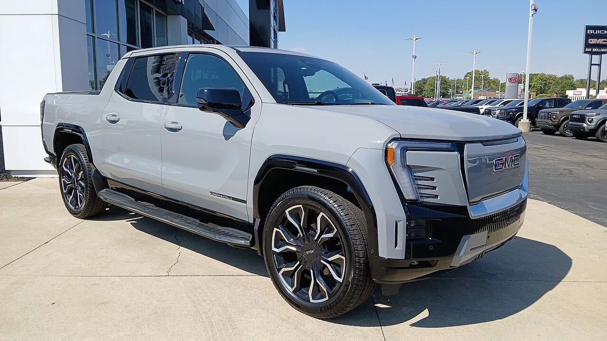
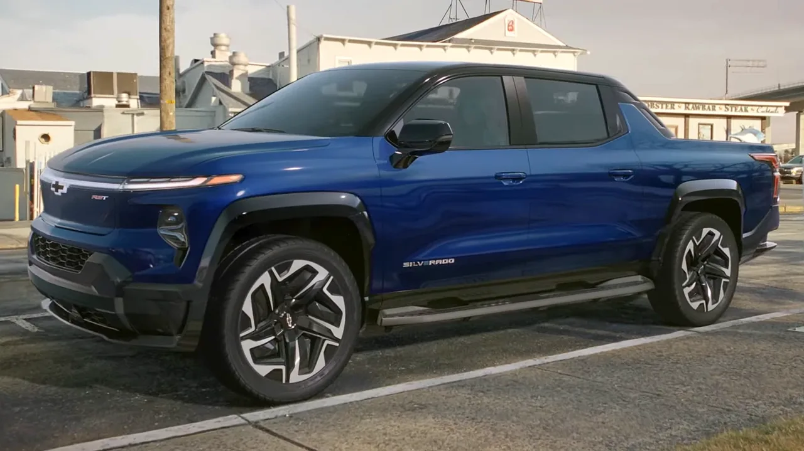
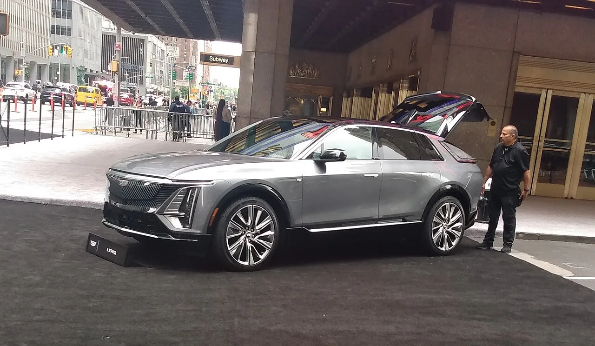

▲ GM은 전기차 생산능력 조정과 배터리 공급계약 정산으로 약 60억 달러 규모의 비용을 인식했다고 밝혔다 ⓒ Wikimedia Commons
"전기차가 이 정도 속도로 꺾일 줄은 몰랐다"는 말이 나올 법하다. GM은 최근 분기 실적 발표에서 전기차(EV) 생산능력 조정과 배터리 공급업체 계약 정산 등을 이유로 약 60억 달러 규모의 EV 관련 비용을 인식했다고 밝혔다.
몇 년 전만 해도 GM은 "2035년까지 전 라인업 전동화"를 공언하며 배터리 공장에 조 단위 투자를 쏟아부었다. 그런데 지금은 같은 공장을 다시 내연기관 트럭 라인으로 되돌리는 데 돈을 쓰고 있다. 무엇이 바뀌었고, GM은 왜 이런 결정을 내렸을까.
1. 60억 달러는 어떻게 구성됐나 — 손상차손과 정산비용
GM이 이번에 인식한 EV 관련 비용은 크게 두 갈래다. 하나는 이미 지어놓은 전기차 생산설비·자산의 장부가치를 낮추는 비현금성 손상차손이고, 다른 하나는 배터리 공급업체 등과 맺은 계약을 조기 종료하거나 물량을 줄이면서 실제로 지급해야 하는 현금성 정산비용이다.
| 구분 | 규모 | 내용 |
|---|---|---|
| 비현금 자산손상 | 약 18억 달러 | EV 생산설비·장비 등 자산 가치 재평가에 따른 손상차손 |
| 공급계약 정산 등 현금비용 | 약 42억 달러 | 배터리 공급계약 등 EV 관련 계약 조기종료·물량축소 정산금 |
| 2025년 3분기 선행 손상차손 | 약 16억 달러 | 비현금 12억 달러 + 계약 정산 등 현금 4억 달러 |
| 합계(최근 1년 누적) | 약 76억 달러 | 2025년 3~4분기에 걸쳐 순차적으로 인식 |

▲ GMC 시에라 EV 등 풀사이즈 전기 픽업트럭은 GM 전동화 전략의 핵심 차종이었다 ⓒ Wikimedia Commons
업계 매체들은 이번 4분기 비용을 EV 관련 비용 외에 중국 사업 구조조정 등을 포함해 총 71억 달러 규모로 보도했는데, 그중 순수하게 EV 생산능력 조정과 관련된 부분이 약 60억 달러 수준으로 파악된다.
2. 왜 이런 결정을 내렸나 — 수요 둔화가 결정타
직접적인 계기는 미국 EV 수요의 급격한 둔화다. 연방 EV 세액공제가 종료되고 배출규제 강도가 완화되면서, 소비자들이 굳이 서둘러 전기차를 살 이유가 줄었다.
📍 EV 소매 판매 비중, 1년 만에 반토막
업계 데이터에 따르면 미국 EV 소매 판매 비중은 2024년 12월 11.2%에서 2025년 12월 6.6%로 급락한 것으로 나타났다. 세제 혜택이라는 구매 유인이 사라지자 수요 자체가 빠르게 식은 셈이다. GM 입장에서는 대규모로 지어놓은 배터리 생산능력과 EV 조립라인이 갑자기 과잉설비가 돼버린 상황이다.
GM은 원래 2035년까지 신차 전 라인업을 전기차로 전환하겠다는 목표를 내세우며 얼티엄(Ultium) 배터리 플랫폼에 대규모 투자를 집행해왔다. 하지만 판매가 계획을 따라가지 못하면서, 이미 지어놓은 설비의 가동률을 낮추거나 용도를 바꾸는 쪽으로 방향을 틀 수밖에 없었다.
3. 최근 GM EV 전략 후퇴 흐름 — 오라이언 공장부터 얼티엄셀즈까지
이번 비용 인식은 갑자기 나온 결정이 아니라, 이미 진행 중이던 일련의 조정 작업의 연장선이다.
✅ 최근 GM의 주요 EV 생산 조정 사례
· 오라이언 조립공장(미시간) — 원래 순수 EV 전용 공장으로 40억 달러를 투입해 개조했으나, 전기차 대신 캐딜락 에스컬레이드·쉐보레 실버라도·GMC 시에라 등 내연기관 풀사이즈 픽업·SUV 생산으로 계획을 재전환
· 얼티엄셀즈 랜싱(미시간) 공장 — GM 지분을 LG에너지솔루션에 매각하며 배터리 합작 구조 축소
· 얼티엄셀즈 워런(오하이오)·스프링힐(테네시) 공장 — 가동 중단 및 근로자 일시·무기한 휴직 조치
· 디트로이트 팩토리 제로 — EV 조립 근무조를 2교대에서 1교대로 축소해 생산량을 절반 수준으로 감축
· 이 과정에서 약 1,750명 규모의 인력이 감원 또는 일시휴직된 것으로 파악됨

▲ 쉐보레 실버라도 EV가 조립되던 팩토리 제로는 최근 근무조를 2교대에서 1교대로 줄였다 ⓒ Wikimedia Commons
GM의 오라이언 공장 전환 과정에 대한 자세한 배경은 아래 기사에서 확인할 수 있다. Crain's Detroit 기사 바로가기
4. 업계 전반의 'EV 캐즘' — GM만의 이야기가 아니다
이런 흐름은 GM 혼자만의 사정이 아니다. 포드와 스텔란티스 등 다른 완성차 업체들도 비슷한 시기에 대규모 EV 관련 손실을 인식하며 전략을 수정하고 있다.
| 업체 | EV 관련 손실 규모 | 대응 방향 |
|---|---|---|
| GM | 약 76억 달러(누적) | 일부 EV 라인을 내연기관 트럭·SUV로 재전환 |
| 포드 | 약 195억 달러 | 대형 순수전기 픽업 차세대 모델 취소, 하이브리드·소형 EV로 무게중심 이동 |
| 스텔란티스 | 약 260억 달러 | 지프 등 핵심 브랜드의 EV 전환 속도 조절 |
📍 GM·포드, EV 언급 자체가 줄었다
업계 보도에 따르면 GM과 포드 모두 실적 발표나 공식 커뮤니케이션에서 EV를 직접 언급하는 빈도 자체가 눈에 띄게 줄었다는 분석이 나온다. 완전한 EV 포기라기보다는, 무리한 목표 대신 수요에 맞춰 속도를 조절하는 현실주의 노선으로 돌아섰다는 해석이다. 동시에 현대차·포드·스텔란티스는 배터리로만 주행하되 소형 발전용 엔진을 얹은 주행거리 연장형 전기차(EREV) 출시를 준비하며 대안을 모색 중이다.
5. 향후 전망 — GM의 다음 카드는
GM은 2026년에도 공급업체 협상 관련 추가 비용이 발생할 수 있다고 예고했다. 다만 규모는 2025년보다는 줄어들 것으로 내다봤다.

▲ 캐딜락 리릭 등 일부 EV 모델은 계속 생산되지만, GM은 신규 EV 투자 속도를 크게 늦추고 있다 ⓒ Wikimedia Commons
✅ GM의 향후 방향으로 예상되는 것들
· 내연기관 대형 픽업·SUV 재투자 — 수익성이 검증된 실버라도·시에라·에스컬레이드 등 캐시카우 차종에 다시 힘 싣기
· 기존 EV 라인업은 유지하되 확장은 자제 — 캐딜락 리릭·에스컬레이드 IQ 등은 생산 지속, 다만 신규 EV 전용 라인 신설은 보수적으로 접근
· 배터리 공급망 재조정 지속 — 얼티엄셀즈 지분 구조나 공급계약을 상황에 맞춰 추가로 손볼 가능성
· 2026년에도 추가 정산비용 가능성 — 다만 2025년보다는 규모가 줄어들 것으로 GM 스스로 예고
6. 요약
GM은 EV 생산능력 재편과 배터리 공급계약 정산으로 약 60억 달러(비현금 손상 18억 달러 + 현금성 정산비용 42억 달러) 규모의 비용을 인식했다. 앞서 인식한 16억 달러대 손상차손까지 합치면 최근 1년간 EV 관련 손실은 76억 달러 안팎으로 불어난다.
배경에는 EV 세제 혜택 종료와 배출규제 완화에 따른 급격한 수요 둔화가 있다. 미국 EV 소매 판매 비중이 1년 새 11.2%에서 6.6%로 떨어지자, GM은 오라이언 공장을 내연기관 트럭 생산으로 되돌리고 얼티엄셀즈 배터리 공장 가동을 조정하는 등 이미 여러 갈래로 전략을 후퇴시켜왔다.
이는 GM만의 현상이 아니라 완성차 업계 전반의 'EV 캐즘'을 보여주는 사례다. 포드(195억 달러), 스텔란티스(260억 달러)도 비슷한 시기 대규모 EV 관련 손실을 인식했다. GM은 2026년에도 공급업체 정산 관련 추가 비용 가능성을 예고했지만, 그 규모는 2025년보다 줄어들 것으로 전망했다.